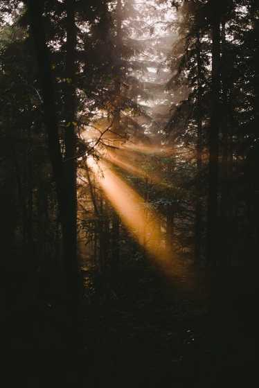
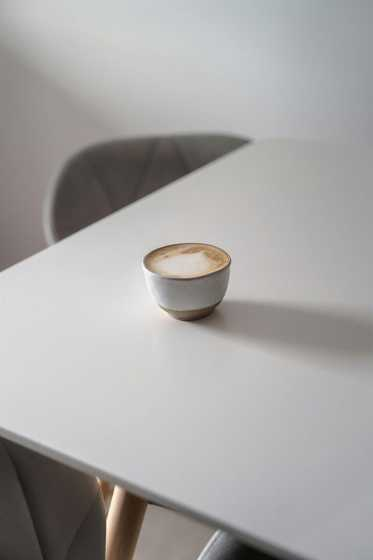

ヒーロー写真: Foggy autumn forest in the morning / Sergey Pesterev / CC BY-SA 4.0(撮影地: ロシア・モスクワ州)
ABOUT
1080mの高さにある、明るい一室。
店名の「1080」は、お店のある八ヶ岳の麓の標高(1080m)を表していると紹介されています。大きなガラス窓のある明るい店内で、席ごとに違う表情の景色と時間をお楽しみいただけます。
お店は2024年10月12日にオープン。料理は日替わりで、その日の仕入れによって内容が変わります。
出典: Lemon8の来店者投稿、個人ブログ(2025年9月)、食べログ掲載情報。店名の由来・オーナーの想いの詳細は確認できていません。



MENU
日替わりのランチと、ドリンク。
前菜とパンが付き、メインを選ぶ形のランチが紹介されています。内容はその日の仕入れで変わります。詳細・価格・営業時間・定休日は準備中です(最新情報はInstagramをご確認ください)。





料理・ドリンクの写真はフリー素材のイメージです。実際のメニューとは異なります。
VOICE
口コミ(イメージ例)
イメージ例窓の外の景色を見ながら、ゆっくりランチができました。
イメージ例前菜からパンまで丁寧で、食後のコーヒーまで満足でした。
イメージ例高原の空気の中で過ごす時間が心地よかったです。
上記は制作側が作成したイメージ例で、実在のお客様の声ではありません。